| |
|
GÖRÜŞ MESAFESİ ETÜTLERİ
|
|
Genel Bilgiler Bu fonksiyon, programda BOYKESİT menüsünün YARDIMCI PROGRAMLAR bölümünde bulunur: 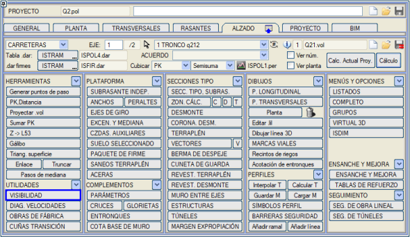
Bu seçeneğe girmeden önce, incelenmek istenen eksen veya eksenlerin geometrisinin hesaplanmış olması gerekir. Görüş mesafesi etütlerinde, enkesitlerdeki arazi dikkate alınır (varsayılan olarak 5 m'de bulunan kamulaştırma sınırına kadar). Etüt konusu olan eksenin bir .dia tablosu atanmış olması gerekir, çünkü bu tablolar aşağıdaki konularda kullanılan bilgileri içerir:
Görüş Mesafesi etütlerine girildiğinde, ana eksene ek olarak hangi eksenlerin görüntülenmesi ve incelenmesi istendiği belirtilebilir. Etüt ana eksen üzerinde tanımlanır, ancak görüş hattı başka bir eksenin bir elemanını engel olarak bulursa, sonuçlar raporunda engelin hangi eksene ait olduğu belirtilir. 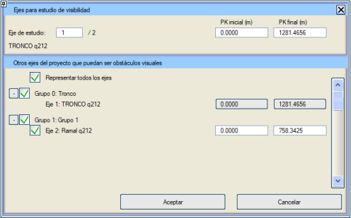
Görüş Mesafesi, bu menünün iki seçeneğinden daha bilgi toplar: yol çizgileri ve hız diyagramı:
Çalışma ekranı, açıkça ayırt edilen altı bölge gösterir: 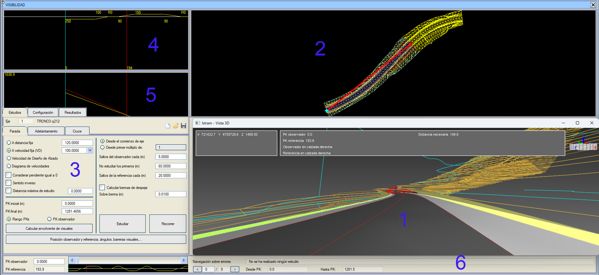
Görüş mesafesi menüsünden çıkıp BOYKESİT'e geri dönmek için, çarpı şeklindeki düğmeye basmak yeterlidir. Veri alanında üç ana menü vardır: Etütler, Yapılandırma ve Sonuçlar. Birincisi (varsayılan olarak seçili görünür) etütleri yapmak için kullanılır. İkincisinden, programın çalıştığı verileri veya elde edilen sonuçları gösterdiğinde uygulamanın görsel görünümünü yapılandıran tüm veriler kontrol edilir ve üçüncüsünden raporlara, bir AVI filmi oluşturmaya ve diğer seçeneklere erişilir. Etüt Tipleri Bir görüş mesafesi etüdü yapılırken, sonuçların uygun olması için etüdü tanımlayan tüm faktörler dikkate alınmalıdır. Hangi tür etüdün yapılacağını, etüdü parametrelendirmek için belirlenmiş yönetmeliklerin neler olduğunu bilmek ve bunları uygun şekilde uygulamak gerekir. Yolu kat eden sürücüyü simüle eden bir gözlemciden ve sürücünün önünde belirli bir mesafede bulunan ve her zaman görünür olması gereken bir referanstan yola çıkılır. Gözlemcinin ve referansın yoldaki konumuna ve onları ayıran mesafeye bağlı olarak, farklı amaçlarla etütler yapılabilir:
Durma ve Sollama Görüş Mesafesi Etütte, görüş engelleri de dahil olmak üzere görüntülenen tüm nesneler dikkate alınır. Aşağıdaki şema, görüş mesafesi etütlerinde yer alan elemanları açıklamaktadır: 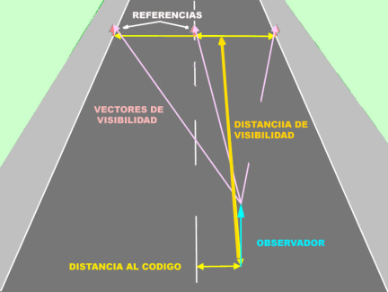
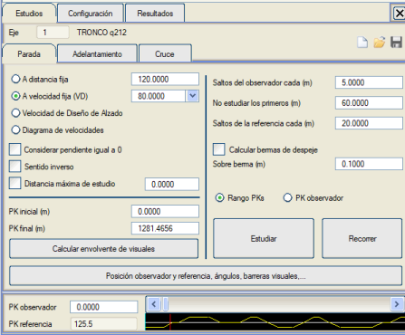
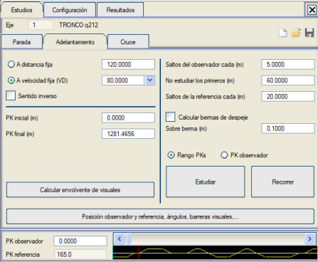
Kavşak Görüş Mesafesi Durma ve sollama görüş mesafesi etütleri, güzergah boyunca, yani belirtilen tüm eksen veya KM aralığı boyunca gerçekleştirilen etütler olduğu gibi, bu etüt, bir kavşağın yerleştirileceği sabit bir konumdan gerçekleştirilir. 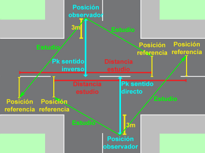
Bu etütte, gözlemci incelenecek yolun dışında durur ve yolu geçip geçemeyeceğini görmek için her iki tarafına da bakar. Kullanıcıya sunulan diyalog kutusu, durma ve sollama görüş mesafesi etütleri için açıklanana benzer, ancak hız diyagramı gibi bazı unsurların kaybolması ve araç tipi, uzunluğu ve ivmesi gibi diğerlerinin ortaya çıkması farkıyla. Gözlemcinin konumu, görüş mesafesi palyeleri ve diğer gelişmiş seçenekler gibi ortak unsurlar önceki bölümde açıklanmıştır. 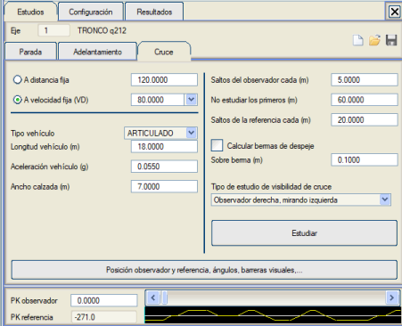
Böylece, varsayılan olarak, mevcut eksen KM'lerin artan yönünde incelenir; kullanıcı, gözlemcinin konumunu (yolun sağında mı yoksa solunda mı olduğunu) seçebilir ve gözlemcinin sağına mı yoksa soluna mı baktığını yapılandırabilir. Kavşak mesafesi, İspanyol yönetmeliğine göre araç tipine, ivmesine, uzunluğuna ve geçilecek platformun genişliğine bağlıdır.
Gözlemci ve Referans Konumu, Açılar, Görüş Engelleri,... Bu seçeneğe tıklandığında iki yeni sekme açılır: Konumlandır (açılan sekme budur) ve Seçenekler. KONUMLANDIRMA Etütlerde, gözlemcinin ve referansın konumunun tanımı dikkate alınır. Bu konumların değerleri, İspanyol karayolları yönetmeliğinde (3.1 IC) belirtilenlere göre varsayılan olarak tanımlanmıştır. Konumlandır sekmesine karşılık gelen diyalog kutusunda, kullanıcının bu değerleri değiştirmesine veya [Vars. Değ.] düğmesine basıldığında geri yüklemesine olanak tanıyan bir dizi seçenek bulunur. Bu konumların yerleştirilmesi, platformun enkesitine (çizgi 67) göre yapılır ve platform kenarlarına karşılık gelen kodlar kullanılır: 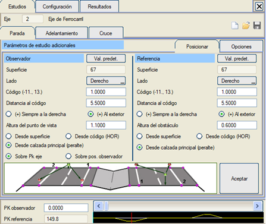
Çift platformlu yolda gözlemci ve referans konumu Değerler, sağ platformdan geçiş yapılandırılıyormuş gibi girilmelidir. Ters yönde bir etüt yapılması durumunda, gözlemci ve referans konumları simetri ile hesaplanır. Eğer tek bir yol ise, diyalog kutuları benzerdir, platform grafiği değişir: 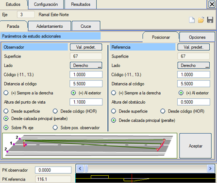
Tek platformlu yolda gözlemci ve referans konumu Ve benzer şekilde, kavşak durumunda diyalog kutusu şöyledir: 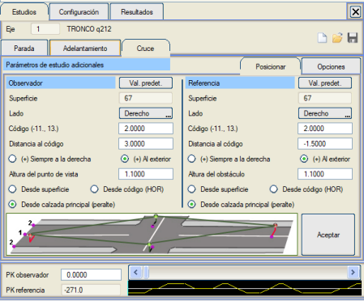
Kavşakta gözlemci ve referans konumu Gözlemcinin ve referansın yatay konumlandırılması:
Gözlemcinin ve referansın dikey konumlandırılması:
Etüt mesafelerinin ölçüm yapılandırması:
GÖRÜŞ ENGELLERİ Görüş engelleriyle yapılan etütler, platform üzerinde (korkuluklar) veya yakınına (çalılar, binalar, ağaçlar, bir üst geçidin tabliyeleri,…) yerleştirilmiş hangi nesnelerin görüşü engellemediğini kontrol etmek için gereklidir. Bir görüş engeli, 3D bir çizgi ve onun üzerinde dikey düzlemde bir paralel ile tanımlanır. İkisi arasında, analizörün incelediği opak dikey bir şerit oluşturulur. Aynı çizgi tipindeki (çizgi katmanı) tüm çizgiler tanımlanır; örneğin, kaplama üzerine çizilmiş L404 ve ondan 0,70 m yükseklikte bir paralel, esnek (otokorkuluk) veya rijit (newjersey) bir bariyeri temsil edebilir. Binaların tanımlandığı çizgi tipi ve örneğin 15 m gibi genel bir yükseklik, genellikle şehir çevresi güzergahlarında kullanılır. Görüş Mesafesi dışında, görüş engellerinin geometrisi tanımlanır; aslında herhangi bir çizgi bir görüş engeli olabilir, ancak en yaygın olanı, görüş engellerinin BOYKESİT menüsündeki YOL ÇİZGİLERİ seçeneğinde tanımlanması ve çizilmesidir. Seçenekler sekmesinin Görüş engelleri bölümünde, haritadaki bu engelleri (otokorkuluklar, newjerseyler, korkuluklar,...) temsil eden her bir çizgi tipine, yerleştirildikleri zeminden bir yükseklik atanır. Ayrıca, bir görüş engelinin yüksekliğinin negatif olması da öngörülmüştür; bu, bir üst geçitten veya benzerinden sarkan bir tabela veya pankarta uygulanabilir. Görüş engelleriyle yapılan etüt, görüş engelinin altından görme olasılığını da içerir. Haritada bulunabilecek binaları, duvarları vb. temsil etmek için her türlü özel çizgi tipi kullanılabilir. Görüş engelleri'nde belirtilen tiplere ait tüm çizgiler inceleneceğinden, bu tiplere ait çizgilerin gerekli olanlar olması ve fazlasının olmaması tavsiye edilir. 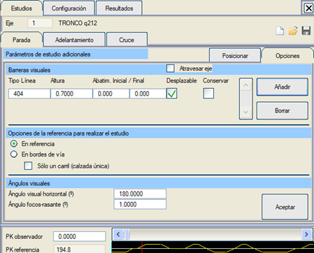
Başlangıç ve bitiş geçişlerinin uzunluğunu belirtmek mümkündür. Geçiş, engeli tanımlayan çizgiye eklenir. Kaydırılabilir özelliği, görüş engelinin kaydırılıp kaydırılamayacağını belirtir. Varsayılan seçenek, kaydırılabilir olmalarıdır. Bir bina gibi (başka bir çizgi tipiyle çizilmiş) açıkça değiştirilemeyen görüş engelleri varsa, bu seçenek kullanılmamalıdır). Koru seçeneği, program tarafından kaydırılması durumunda orijinal çizgilerin veya görüş engellerinin bir kopyasını korumaya olanak tanır. Görüş engellerinin uzaklaştırıldığı bir etüt yapıldığında, incelenecek çizgi tiplerinin tanımında "Kaydırılabilir" ve "Koru" seçenekleri işaretlenirse, kaydırılan çizginin kendi rengi olarak kırmızı renk atanır. Bu, engelin kaydırıldığı bölgelerin tanımlanmasını kolaylaştırır. Bir otoyol veya otobanda etüt yapılıyorsa, görüş engellerini refüj boyunca sonuna kadar veya karşı yöndeki şeritleri işgal ederek kaydırmaya olanak tanıyan Refüjü geç seçeneği etkinleştirilebilir. Ekseni geç seçeneği benzerdir, ancak tek yönlü (tek taraflı) eksenler incelendiğinde, diğer taraftaki görüş engellerinin kaldırılabilmesi içindir. OpenGL® penceresinde, biri görülebilmesi için zeminden 0,1 metre yükseklikte ve diğeri o görüş engeli tipi için belirtilen yükseklikte olmak üzere iki mavi çizgi çizilir; bu, soldaki resimde gösterilmektedir. Sağdaki resimde ise aynı resim, dokular gösterilerek ve kullanılan yol çizgisinin (otokorkuluk) 3D temsiliyle birlikte görünmektedir. Bunun için, Yapılandırma sekmesindeki Yol çizgilerini göster kutucuğu etkinleştirilmiştir:
REFERANS SEÇENEKLERİ Etüdün, enkesit üzerinde belirlenmiş konumundaki referansa bakılarak veya yolun kenarlarında, her ikisinde ve aynı anda yapılması belirtilebilir.
GÖRÜŞ AÇILARI
3D Görüntüleme Penceresinin Yapılandırılması Bu sekmeden, genel görüntüleme özelliklerini yapılandırmak mümkündür. Yapılandırma sekmesine tıklayarak erişilir: 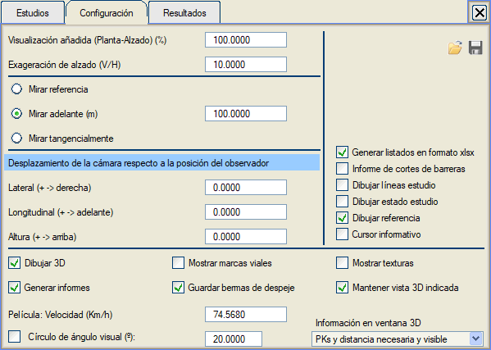
Bunlar, etütlerin sonuçlarını etkilemeyen seçeneklerdir, ancak pencerelerin yeniden çizilmesi nedeniyle gerçekleştirilme süresini etkileyebilir ve etüdü görme şeklimizi etkileyebilir.
Eğer "Etüt durumunu çiz" seçeneği işaretlenirse, etüt yapıldığında 3D penceresinde tüm etüt konumları gösterilir; gözlemci ve referans ilgili yerlere yerleştirilir ve o noktanın görüş durumu belirtilir. Ayrıca, yarma temizlenmesi veya yol çizgilerinin kaldırılması gerekiyorsa, bu kaldırmanın nasıl gerçekleştiği gösterilir. Bu işlem, bir etüt yapmak için gereken süreyi önemli ölçüde artırır, bu nedenle bu seçenek varsayılan olarak devre dışıdır, ancak şüpheleri gidermek için yararlı olabilir. Bu seçeneğin kullanılıp kullanılmaması, etüdün sonucunu hiçbir şekilde etkilemez. Sonuçlar Bu sekmeden, raporlar veya resimler şeklinde sonuçların görüntülenmesine erişilir: 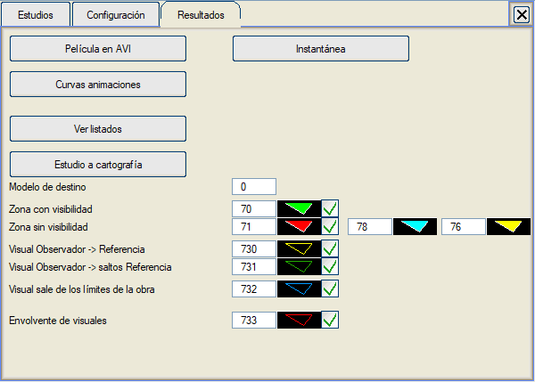
Haritaya aktarılan bilgi türünü ve bu bilginin temsil edildiği çizgi türünü seçmek mümkündür. Mevcut bilgi türleri şunlardır:
Aşağıda, sabit hızlı bir durma görüş mesafesi etüdü raporu örneği gösterilmektedir:
################################################################################
# G Ö R Ü Ş M E S A F E S İ E T Ü D Ü # ################################################################################ # # # Bir eksen veya eksen kesiti boyunca Durma Görüş Mesafesi Etüdü # # # # # ################################################################################ # ISTRAM(R) V. 9.04 98 # ################################################################################ # # # Eksen: 1 yönünde: Normal # # 120.0 Km/s sabit hızlı etüt # # Eksen başlangıç KM'si: 0.000 bitiş KM'si: 2855.444 # # Etüt başlangıç KM'si: 0.000 bitiş KM'si: 2855.444 # # # # Etüt için gözlemci atlamaları her: 5.00 m # # İlk metrelerde görüş mesafesi varsayılır: 60.00 m # # Buradan itibaren görüş mesafesi her: 20.00 m'de bir incelenir # # # # Düşey tolerans açısı, derece cinsinden: 1.00 # # Yatay tolerans açısı, derece cinsinden: 45.00 # # # # Etüt, gözlemcinin görüş noktası ile referans noktası arasında yapılır # # yapılandırılmış. # # # # Gözlemcinin yapılandırılmış yörüngesi: # # Yüzey: 67 # # Taraf: Sağ # # Kod: 1 # # Koda olan mesafe: 5.5 m dışa doğru # # Yükseklik: 1.10 m Ana Platformdan # # # # Referansın yapılandırılmış yörüngesi: # # Yüzey: 67 # # Taraf: Sağ # # Kod: 1 # # Koda olan mesafe: 0.0 m dışa doğru # # Yükseklik: 0.20 m Ana Platformdan # # # ################################################################################ KM Mevcut Gör. Gerekli Gör. i Yarıçap Kd fl Hız Etüt Hız İnd. Engel Eksene Mes. Engel KM -------------------------------------------------------------------------------- 0.0 246.6 246.6 2.404% -383.5 -2500.000 0.291 120.0 5.0 247.7 247.7 2.204% -383.5 -2500.000 0.291 120.0 10.0 248.9 248.9 2.004% -383.5 -2500.000 0.291 120.0 15.0 250.0 250.0 1.804% -383.5 -2500.000 0.291 120.0 20.0 251.2 251.2 1.604% -383.5 -2500.000 0.291 120.0 25.0 252.5 252.5 1.404% -383.5 -2500.000 0.291 120.0 30.0 253.7 253.7 1.204% -383.5 -2500.000 0.291 120.0 35.0 254.9 254.9 1.004% -383.5 -2500.000 0.291 120.0 40.0 256.2 256.2 0.804% -383.5 -2500.000 0.291 120.0 45.0 257.5 257.5 0.604% -383.5 -2500.000 0.291 120.0 50.0 258.7 258.7 0.404% -383.5 -2500.000 0.291 120.0 55.0 260.1 260.1 0.204% -383.5 -2500.000 0.291 120.0 60.0 261.4 261.4 0.004% -383.5 -2500.000 0.291 120.0 65.0 262.7 262.7 -0.196% -383.5 -2500.000 0.291 120.0 70.0 240.0 264.1 -0.396% -383.5 -2500.000 0.291 120.0 114.9 Refüj 1.664 296.717 75.0 240.0 265.5 -0.596% -383.5 -2500.000 0.291 120.0 114.6 Refüj 1.525 291.611 80.0 240.0 266.9 -0.796% -383.5 -2500.000 0.291 120.0 114.3 Refüj 1.498 286.528 85.0 240.0 268.3 -0.996% -383.5 -2500.000 0.291 120.0 114.1 Refüj 1.509 280.428 90.0 220.0 269.8 -1.196% -383.5 -2500.000 0.291 120.0 109.3 Refüj 1.809 284.852 95.0 220.0 271.2 -1.396% -383.5 -2500.000 0.291 120.0 109.0 Refüj 1.853 279.639 100.0 220.0 272.7 -1.596% -383.5 -2500.000 0.291 120.0 108.8 Refüj 1.942 273.422 125.0 180.0 274.3 -1.805% -383.5 2500.000 0.291 120.0 98.4 Platform 3.136 279.299 130.0 180.0 272.8 -1.605% -383.5 2500.000 0.291 120.0 98.6 Platform 3.308 269.210 135.0 180.0 271.3 -1.405% -383.5 2500.000 0.291 120.0 98.8 Platform 3.688 264.914 140.0 160.0 269.8 -1.205% -383.5 2500.000 0.291 120.0 93.3 Platform 3.634 283.306 145.0 160.0 268.4 -1.005% -383.5 2500.000 0.291 120.0 93.6 Platform 3.955 271.538 150.0 160.0 267.0 -0.805% -383.5 2500.000 0.291 120.0 93.8 Platform 4.365 265.494 155.0 160.0 265.5 -0.605% -383.5 2500.000 0.291 120.0 94.0 Platform 4.842 262.241 160.0 140.0 264.2 -0.405% -383.5 2500.000 0.291 120.0 87.8 Platform 4.321 282.109 165.0 140.0 262.8 -0.205% -383.5 2500.000 0.291 120.0 88.0 Platform 4.846 273.525 ... ... ... ... ... ... ... ... ... ... ... ... 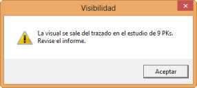Görüş mesafesi etütlerinde, gözlemci ile referansı birleştiren görüş hattının, incelenen projenin geometrisinin sınırlarının dışına çıkması durumunda kullanıcı uyarılır. Bu noktalarda, arazinin şekli veya bunun görüş mesafesi için bir engel olup olmadığı hakkında bilgi yoktur, bu nedenle bu durum etüt raporunda da belirtilir.  Görüş Mesafesinin Grafik Bilgileri Bir etüt yapıldıktan sonra, sonuçlar Güzergah Elemanları, Hız Diyagramı ve Sonuçlar penceresinde gözlemlenebilir. Bu pencerede, alt kısımda, sarı sütunların istenen görüş mesafesinin elde edildiği KM'leri ve kırmızıların elde edilemediği KM'leri gösterdiği bir histogram görünür. Bu sütunların yüksekliği, ulaşılan görüş mesafesiyle orantılıdır. 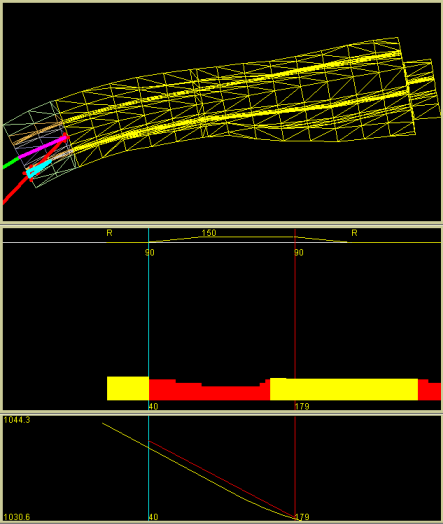
Ancak bu sonuçlar, mevcut KM için YATAY PLAN penceresinde ve 3D görünümde de görülebilir. YATAY PLAN'da, gözlemcinin bulunduğu noktayı ve etüdün yapıldığı noktaları geçen bir çizgi görünür. Bu çizgi, görüş mesafesinin olduğu kesimlerde yeşil, olmadığı kesimlerde ise kırmızı renktedir. 3D görünüm penceresinde aynı çizgi 3D olarak çizilir. Hatalar Üzerinde Gezinme Etüt yapıldıktan sonra, alt kısımda bulunan bu menüden, bir görüş problemi gözlemlenen her noktaya sırayla (KM'lere göre) gidilebilir; ayrıca, problemin nedeni ve ortaya çıktığı KM aralığı da belirtilir: Çalışma Metodolojisi ve Sonuçların Gözden Geçirilmesi Özet olarak ve görüş mesafesine pratik bir yaklaşım sunmak amacıyla, bir etüt yapmak için kullanıcının gerçekleştirmesi gereken adımlar aşağıda açıklanmaktadır: Adım 1: Gerekli verilerin elde edilmesi Görüş mesafesi seçeneğine girmeden önce, incelenmek istenen eksen veya eksenlerin boykesitinin hesaplanmış olması gerekir ( ispol#.per dosyalarının mevcut olması, # eksen numarasıdır).
Görüş Mesafesi algoritmaları tarafından dikkate alınabilmeleri için yol çizgilerinin ve görüş engellerinin hesaplanmış ve çizilmiş olması çok yararlıdır. Ayrıca, görüş mesafesi etütlerini yöneten yönetmelikler hakkında bir fikir sahibi olmak da tavsiye edilir. Tüm bunlar dikkate alındıktan sonra, Görüş Mesafesi menüsüne erişilir. Adım 2: Etüdü tanımlayan verilerin girilmesi Görüş Mesafesi'ne girildiğinde:
Adım 3: Etüdün gerçekleştirilmesi Bunun için [Etüt Et] düğmesine basmak yeterlidir ve etüt otomatik olarak gerçekleştirilir.
Adım 4: Sonuçların görüntülenmesi Etüdün sonuçları bir raporda saklanır ve Güzergah Elemanları, Hız Diyagramı ve Sonuçlar penceresinde gösterilir.
Sonuçlar beklenildiği gibi değilse, gerekli düzeltmeler bu menünün dışında yapılmalı ve uygun değişiklikler yapıldıktan sonra, gerekli hedeflere ulaşılana kadar bu süreç tekrarlanmalıdır. Diğer kolaylıklar Açıklandığı gibi, Görüş Mesafesi seçeneği, işi kolaylaştıran ve etütleri yapmak için kesinlikle gerekli olmayan başka olanaklara ve/veya özelliklere sahiptir. Program, kullanıcının gözlemci noktasını ve referans noktasını eksen boyunca ihtiyaç duyduğu noktalara yerleştirmesine olanak tanır. Bunun için birçok yöntemi vardır. Gözlemci ve referans, Gözlemci KM'si seçeneği ile istenen kilometre noktası değeri girilerek veya menünün alt kısmındaki kaydırıcıyı kullanarak konumunu vermek suretiyle eksenin herhangi bir KM'sine yerleştirilebilir. Enine konumuna gelince, Gözlemci ve referans konumu, açılar, görüş engelleri,… alt menüsü bulunmaktadır; bu alt menüde, gözlemci, bir enkesiti tanımlayan kodlardan herhangi birine herhangi bir mesafede ve ayrıca yol yüzeyinden herhangi bir yükseklikte yerleştirilebilir. Etüt, etüt mesafesini belirleyen bir hız diyagramı ile desteklenebilir. Bu özellikler tanımlandıktan sonra, bir eksen gezintisi veya bir görüş mesafesi etüdü yapılabilir. Her ikisi de gözlemci ve referans konumlarının enine özelliklerine uyar. Etütler ve gezintiler, yoldaki her iki gidiş yönünü incelemek veya kat etmek için normal veya ters yönde yapılabilir. Kapsamları da sınırlandırılabilir. İşleyiş çok yavaşsa, herhangi bir grafik penceresinin çizimleri devre dışı bırakılabilir. Etüt, referans üzerinde veya platformun her iki tarafında aynı anda yapılabilir. Yolun tek platformlu olması durumunda, yalnızca kat edilen şerit üzerinde yapılabilir. Varsayılan olarak, başlangıç KM'sinden bitiş KM'sine kadar, eksen boyunca her 5 metrede bir etüt yapılır; ilk 60 metrede görüş mesafesi olacağı varsayılır, bu nedenle incelenmez ve buradan itibaren etüt mesafesine ulaşılana kadar her 20 metrede bir alt etütler yapılır. Yani, KM 1234,234'te başlanırsa, orada ilk etüt yapılır, bir sonraki KM 1239,234'te yapılır ve bu şekilde devam eder; her birinde ilgili alt etütler yapılır, gözlemci ile KM 1294,234'teki referansı birleştiren doğrunun yolun, arazinin veya görüş engellerinin hiçbir üçgenini kesmemesi aranır; bu alt etüt, referansı KM 1314,234, 1334,234 ve 1354,234'e yerleştirerek tekrarlanır (etüt mesafesinin 120 m olduğu varsayılarak). Bu koşullar, kullanıcının ihtiyaçlarına uyacak şekilde değiştirilebilir. Son alt etüdün bitiş noktası etüt mesafesiyle çakışmazsa, etüt mesafesi için ek bir alt etüt yapılır (örneğin, varsayılan koşullar, başlangıç ofseti 50 olacak şekilde değiştirilirse, 1284,234, 1304,234, 1324,234, 1344,234, 1364,234 ve 1354,234 incelenir). |